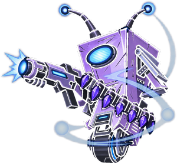

Weapons
Shields
Parts — every option for every slot on this weapon type, and what it actually does to the build. Pick from the dropdown or click a tile; the amber outline marks what's on the gun right now.
Named Weapons — every legendary / unique / pearlescent title this weapon type can take. Click to load one (cross-checked against Lootlemon).
SANITY CHECK: PASS
CUSTOM COMBO
Pick a part to see its raw data.
Parts — every Shield Body / Left Side / Right Side option, and what it actually does to the build. Pick from the dropdown or click a tile.
Pick a part to see its raw data.
Card
3D View
Code
Level Requirement: --
-
-
Loading part preview…
View in 3D
Damage-
Accuracy-
Fire Rate-
Capacity-
Recharge Rate-
-

--
The real in-game 3D model for each selected part, assembled with the game's own attachment points - live and interactive, drag to rotate, scroll to zoom, it auto-spins on its own too.
Loading…
Import / Export - the same "Weapon Parts" clipboard text WillowTree's own Import/Export buttons use: 14 asset lines, then Remaining Ammo / Quality / Equipped Slot / Level.
Import / Export - WillowTree#'s own Item Editor clipboard format (same generic ucGears control the Weapon Editor uses, just Item's own 9-line part order): Item Grade, Gear Type, Body, Left Side, Right Side, Material, Manufacturer, Prefix, Title, then Quantity / Quality / Equipped / Level.
Click a build's own name anywhere in this tool (Save File Armory) and its code lands here too - this box always shows exactly what's currently built. Paste a weapon's code above and hit either Import button to load it back into the builder.
My Builds — saved parts combos, loaded exactly as-is (any weapon type; switches type for you).
Save File Armory — 118 legendaries/uniques decoded straight from a real Borderlands 1 save (the Legend/Pearl Unique List), signature parts and all. Any weapon type; switches type for you.
My Shield Builds — saved shield part combos, loaded exactly as-is.
-